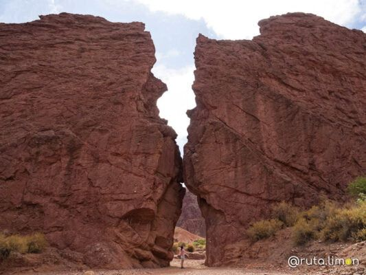
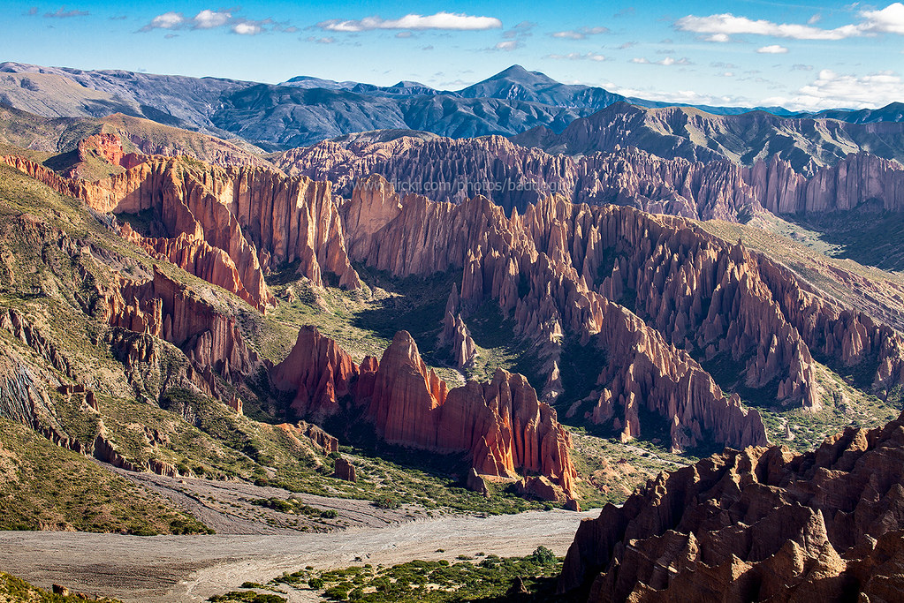
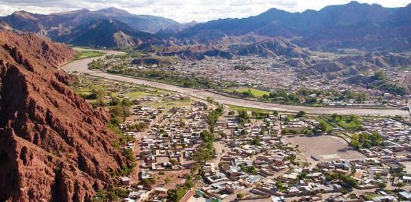
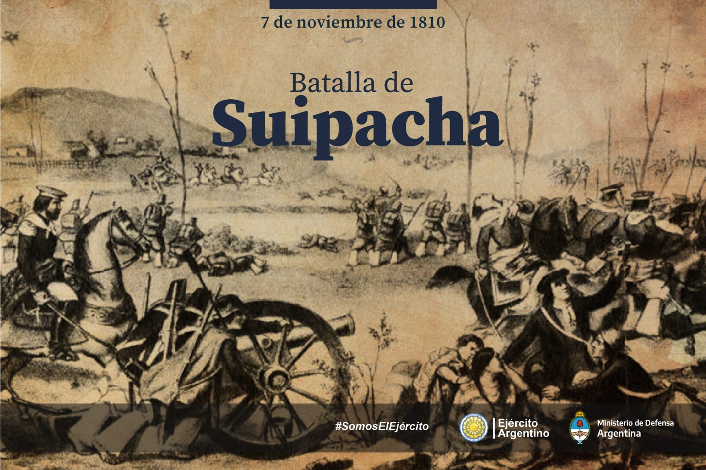
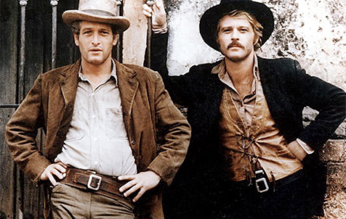

BIENVENIDOS A LA HISTORIA CHICHEÑA
Tupiza, Bolivia fue descubierta por el conquistador español Diego de Almagro durante su expedición a los territorios de la actual Bolivia, que en ese entonces se llamaban la Provincia de Charcas. Almagro fundó en este lugar uno de los primeros poblados europeos de Bolivia, llamado Paria (Tupiza).
Tupiza es la capital de la provincia Sud Chichas de Potosí y fue fundada el 4 de junio de 1574. Se le conoce como la Joya Bella y Capital Cultural de la Juventud de Bolivia.
En Tupiza se pueden realizar actividades como caminar, montar a caballo o andar en bicicleta de montaña para descubrir las características geológicas de la región.
TUPIZA
|LA JOYA BELLA DE BOLIVIA|
Es conocido como un pueblito encantado, lleno de costumbres y tradiciones provenientes de epocas precolombinas
PUEBLITO ENCANTADO

Lugares Curiosos de TUPIZA
- La puerta del Diablo
- El Sillar
- Cerros Colorados
Esta es la muy conocida "Puerta del Diablo" del valle tupiceño. Es una formación rocosa que con el tiempo ha ido adquiriendo la forma de una puerta, asemeja un pórtico gigantesco y estrecho quebrado sobre una inmensa pared rojiza.
El Sillar es un bosque de piedras de pináculos de roca arenisca erosionada ubicado en el camino de Tupiza al Altiplano de Bolivia, a unos 6 kilómetros de Tupiza.
Los cerros colorados son una característica de la ciudad de Tupiza
Los cerros colorados rodean la ciudad, sus cañones, y sus formaciones rocosas han hecho que sea comparada con el “lejano oeste”.
Principales Acontecimientos HISTÓRICOS
- Batalla de Suipacha
- Últimos atracos de Butch Cassidy y Sundance Kid
- Otros Datos
La batalla de Suipacha fue un enfrentamiento armado librado el 7 de noviembre de 1810, durante la primera expedición auxiliadora al Alto Perú, que se produjo a 25 km de Tupiza, en la población de Suipacha, a orillas del río Suipacha, entonces intendencia de Potosí (en la actual provincia de Sud Chichas del departamento de Potosí de Bolivia) y en el que el Ejército Auxiliar, enviado por la Primera Junta de Gobierno, triunfó por primera vez ante el Ejército Real del Perú, enviado por el Virreinato del Perú.
El 6 de noviembre de 1908, después de asaltar al pagador de una compañía minera, un pelotón del ejército boliviano cercó a los bandidos en una casa del pueblo de San Vicente. El tiroteo se extendió durante la noche: Butch mató a un soldado,fue su primera muerte, y Sundance cayó herido. No había escapatoria. Tras una pausa en el enfrentamiento, se escucharon dos balazos en la pieza donde estaban los norteamericanos: Butch había dado muerto a su compañero para después suicidarse. Pero a partir de entonces los bandidos revivieron y murieron muchas veces, en incontables leyendas.
Aunque existe todavía en la actualidad cierta controversia sobre si fue esta caravana la que hizo el primer asentamiento en el lugar o fue su avanzadilla, liderada por Juan de Saavedra, quien lo creó; en cualquier caso, se trata de la población más antigua de Bolivia fundada por españoles. Sus más de 40.000 habitantes se apretujan en un angosto valle, el que crea el propio río Tupiza, que está siempre custodiado, desde tiempos pretéritos, por unos cerros destacados de un color rojizo característico. Y son estas veleidosas formaciones pétreas las que representan uno de los mayores atractivos de la localidad, situada en el sur de Bolivia y ya casi flirteando con la vecina Argentina.
Tupiza
Tupiza con sus 40'000 habitantes, villa simpática y con clima agradable, es rodeada por los cerros colorados de la Precordillera a 2950 metros de altura en el fértil valle del Río Tupiza. Ubicada en el territorio ancestral de los Chichas, en 1895 se convierte en capital de la Provincia de Sud Chichas y municipio del Departamento de Potosí. Es puerta de Bolivia hacia la Argentina y su producto principal consiste en minería y agricultura (choclo). Tupiza fue fundada por los Españoles, pero la fecha exacta no está comprobada históricamente. Sin embargo debe de estar entre las primeras fundaciones coloniales efectuadas en el Alto Perú de alrededor del 1536. Un auge especial inició con la inauguración de la vía férrea que en 1924 conectó Tupiza con La Quiaca, pueblo fronterizo en la Argentina. Hoy en día la villa se compromete a recibir con una infraestructura acomodada al turismo internacional que aumenta año tras año, atraído por la belleza de sus entornos.
Monumento a José Avelino (Ortiz de) Aramayo Ovalle
Este monumento en la Plaza de la Independencia en honor de una de las verdaderas eminencias de esta tierra chicheña fue inaugurado en 1909, en conmemoración del centenario de su nacimiento, por su hijo Félix Avelino Aramayo Vega. José Avelino Aramayo es fundador de la dinastía de los Aramayo, los reyes de la plata y posteriores barones de la gran minería. Nació en Moraya (45km de camino al sur de Tupiza) el 25 de septiembre de 1809 a vísperas de la revolución; adquirió una educación rudimentaria a pesar de su abolengo señorial. Comienza a trabajar desde niño y más tarde se pone al servicio del minero Martín de Jáuregui. Hombre de acción, pronto pudo disponer de recursos obtenidos a fuerza del trabajo; organizó empresas mineras; adquirió las minas de Portugalete y cuarta parte de las acciones de Huanchaca; comenzó a intervenir poderosamente en toda la industria y empresas de grueso volumen económico. De las líneas precedentes podemos imaginarnos la personalidad de este inquieto industrial minero: emprendedor, innovador, temerario, visionario, soñador, poco pragmático, de ascendencia muy humilde y que nunca logró gran fortuna. Como hombre de temple luchó hasta el último de sus días. No alcanzó personalmente la satisfacción de conocer el triunfo; y cuando murió, dejó más deudas que fortuna, a sus hijos.
Las tres generaciones de la dinastía fueron:- José Avelino Aramayo Ovalle 1809 - 1882
- Félix Avelino Aramayo Vega 1846 - 1929
- Carlos Víctor Aramayo Zeballos 1889 - 1981

Entrada a la Catedral Nuestra Señora de la Candelaria
A fines de julio de 1895 el político argentino Dardo Rochas con su delegación en misión diplomática paso por Tupiza, su acompañante y secretario Alberto Blancas escribió: - Tupiza es una población de 2000 almas. Ofrece recursos y medios fáciles de locomovilidad. Calcúlanse en la sola ciudad como 500 caballos y otro número igual en sus alrededores. Sus habitantes lo usan mucho y tienen reputación de jinetes. Los habitantes son muy hospitalarios. La ciudad está situada á 3049 metros sobre el nivel del mar, es pequeña pero pintoresca y le da mucha vida el blanco y azul con que están pintadas las casas. Tiene una iglesia antigua y pobre y se estaba concluyendo un espléndido templo que le hace honor. - ▪ La “iglesia antigua y pobre” se llamaba iglesia Nuestra Señora del Carmen y hoy ya no está. ▪ El “espléndido templo” es eso de aquí y fue consagrado a Nuestra Señora de la Candelaria. (Vea también dos fotos más arriba.) Las letras ornamentadas en la fachada del templo nos revelan la fecha de su inauguración: El 16 de julio de 1897.
Catedral Nuestra Señora de la Candelaria
El interior de la catedral, bien decorado para una boda que iba celebrarse este día.
La catedral tiene planta basilical con tres naves, cubiertas con bóvedas de cañón corrido; al fondo se ubica el altar neoclásico. Al exterior en los muros laterales tiene contrafuertes de planta rectangular.
Nuestra Señora de la Candelaria
La Virgen de la Candelaria o Nuestra Señora de la Candelaria es una de las advocaciones marianas más antiguas de la Virgen María, su fiesta se celebra en toda la Iglesia católica el 2 de febrero. Su devoción tiene mucho arraigo en países como España, Bolivia, México, Perú y otros. Asimismo, su patronazgo se extiende a varias ciudades y países de América y de otros continentes.
El culto a la Virgen de la Candelaria tiene su origen en las Islas Canarias (España) y se ha extendido a través de los siglos por diferentes ciudades y países sobre todo en Latinoamérica, donde ha adoptado rasgos de las diferentes naciones donde se encuentra un templo suyo.
Aduana Nacional con Correos y Telégrafo, 1911
Tras innumerables litigios por políticos bolivianos corruptos y oportunistas, quiebras de empresas constructoras y falta de medios económicos, se inaugura en 1924 la línea férrea de Villazón a Tupiza. La línea entre Tupiza y Atocha finalmente empezó a funcionar en 1925, completándose así la arteria férrea entre el lago Titicaca y el Río de la Plata. Hasta entonces, llegando desde el sur, se aprovechaba el transporte por ferrocarril sólo hasta La Quiaca. De ahí a Tupiza y hasta Atocha había que hacerlo en lomo de mula o en diligencia, dependiendo de las condiciones meteorológicas. Atocha estaba conectada por ferrocarril con el norte ya desde el año 1913, cuando se inauguró el trayecto Uyuni-Atocha. Uyuni a su vez era el nudo ferroviario más importante del país con conexiones a Oruro al norte, a Potosí al oriente y con Antofagasta en el litoral del Pacífico chileno.
La cuna del arco iris - Quebrada Palala
En la época húmeda (enero a marzo) en Tupiza el sol nace a menudo en un cielo completamente despejado. Ya luego, encima de los cerros altiplánicos en el horizonte a noroeste aparecen algunas nubecitas cándidas que rápidamente van hinchándose, formando enormes torres térmicas que se parecen a tentáculos de un monstruo que quiere agarrar Tupiza. Al mediodía el horizonte noroccidental tiene color de tinta negra y significa que por ahí ya empezaron las lluvias torrenciales. Deprisa el frente tormentoso se pone en marcha hacia el sudeste y en la tarde va arrollar a Tupiza. El día se hace noche, los vientos se hacen huracán y las quebradas secas se convierten a torrentes peligrosos que arrastran todo lo que se le oponga. No es raro que al terminar el día, el frente se despide con rumbo a las regiones chaqueñas, librando una franja de cielo despejado en el aire purificado al noroeste y permitiendo así al sol echar sus últimos rayos a iluminar la cortina lluviosa en retirada. Así es que nace el perfecto arco iris tupiceño, semicircular con colores intensos que no tiene rival por doquiera
La Poronga, en el camino entre Tupiza y Salo
El ministro argentino Dardo Rocha en el año 1895 visitó Bolivia en misión diplomática. En camino hacia Sucre la delegación pasó por aquí y su secretario Alberto Blancas lo comentó así: "Si la fantasía necesitara un campo para traducir sus concepciones, sin duda alguna lo encontraría en ese camino de Tupiza a Salo. Yo no he visitado en el mundo nada que pueda igualarle. El Cerro Grande de San Miguel y la sucesión de serranías forman el fondo del cuadro y en su perspectiva, en esas montañas de tierra grietadas por los torrentes de las aguas, modeladas por los caprichos de la naturaleza, se presentan a la vista ciudades fantásticas, con templos y palacios, ruinas y arcos que parecen la creación del hombre, y no son sino montones informes de grandes masas de tierra que a medida que uno avanza hacia ellas se desvisten de sus galas y muestran la realidad dejando esas ciudades fantásticas como un solo efecto de espejismo que engañando la vista hace soñar en la grandeza de pueblos y ciudades. ¡Qué contraste tan curioso! ¡Qué efectos tan originales! De Tupiza a Salo, sobre todo de San Miguel hasta Salo, las vistas son espléndidas y á cada momento se reproducen los efectos que acabo de indicar, especialmente en el lugar llamado Palala."
Línea férrea entre Tupiza y Uyuni
Esta es la línea férrea que juntaba Buenos Aires con La Paz, dando así a Bolivia acceso al Océano Atlántico. Desde su planificación en 1883 hasta su inauguración en 1924 debían pasar 41 años. Hoy en día el trecho entre la frontera con Argentina (La Quiaca / Villazón) y Oruro sigue operando a título de uno de los últimos grandes ferrocarriles del continente. No cabe duda que su paso por el Valle del Río Tupiza representa el clímax absoluto para cada amante del ferrocarril. Cuatro trenes de pasajeros van y vienen por aquí cada semana

Camino vertiginoso encima de los bosques petrificados - El Sillar
Este es el camino aventurado que comunica con la mina de Chilcobija, donde todavía se extrae el antimonio, y con el mineral argentífero de San Vicente, eso de la presumida muerte del bandolero Butch Cassidy. De San Vicente, la pista se dirige hacia sudoeste a las provincias de Los Lípez topando primero con San Pablo de Lípez, la capital de Sud Lípez, luego con la ciudad fantasma de San Antonio de Lípez y finalmente con la aldea de Quetena, donde el camino se divide a Laguna Colorada y a Laguna Verde, ambas en la frontera con Chile. Esa región altiplánica cuenta con una densidad de unos 0,2 habitantes por kilómetro cuadrado. De Tupiza (2950 m), el camino sinuoso a poca distancia ya llega a una altura de 4300 metros y aquí en la foto, pasado el Sillar, trepa el acantilado encima de un paisaje sencillamente estremecedor.
El telégrafo entre Tupiza y Tarija
Este viejo poste telegráfico en su época era signo de alta tecnología y de progreso. En 1905 la escritora estadounidense Maria Robinson Wright estando en La Paz relata: "Sorprenderá a muchas personas que en la remota ciudad de La Paz fueran aprovechables tantas facilidades para una conferencia a larga distancia y yo misma me sentí estupefacta al saber que era posible desde estas cómodas oficinas sostener sin interrupción una comunicación con los prefectos de Cochabamba, Sucre y Potosí, por medio de los servicios de un operario del telégrafo que llevaba la conversación entre ciudades apartadas por distancias de algunos días e inaccesibles en aquella estación, diciembre, excepto por largos viajes sobre mulas." Y en otro lugar, hablando de la entonces famosa mina de plata de Huanchaca (Pulacayo) y de la Compañía Huanchaca de Bolivia, informa: "La producción de las minas era embarcada para Europa por el puerto de Cobija, hasta que la guerra del Pacífico cerró esta salida y fue necesario buscar un puerto argentino. Con este objeto, la Compañía construyó una línea telegráfica, la primera de Bolivia, para enlazar a Huanchaca con las oficinas del Gobierno que estaban entonces en Sucre, extendiéndola a Potosí y Tupiza para facilitar la comunicación con esa sección del país y por Tupiza con la Argentina." Este poste solitario encima de la Abra Blanca hacía parte de la línea telegráfica Tupiza – Tarija – Bermejo – Orán (Argentina) que fue entonces una de las primeras del país construida alrededor de 1887.
Tupiza desde la cabeza del Elefante
¡Eso corta el respiro! La vertical roca de piedra arenisca del Cerro Elefante cae entre 200 y 300 metros. La quebrada con el río seco está 500 metros más abajo y esta foto la saqué estando parado en un peñasco a un paso del precipicio. Por atrás del Elefante y 120 metros más abajo está la meseta de la Pampa Chuchuli con la estancia del mismo nombre. De ahí baja una senda muy empinada y muy mala los 400 metros para llegar en seis kilómetros a Tupiza que aquí divisamos atrás del colorado Cerro Yurcuma. Cuando trepo esta senda con el sol ardiente por encima y sudando siete camisas, de vez en cuando encuentro a la viejita de la estancia andando con bastón, que baja a vender su quesito de cabra o doy con los niños en su camino a la escuela. Eso me hace pensar en los chiquillos en la ciudad que a su escuela ni dos cuadras van caminando sin que su papi les lleve en coche.
FERROCARRIL EN TUPIZA
El 10 de mayo de 1924 fue un día de placeres para los habitantes de la ciudad de Tupiza, pues en la estación a medio construir se hallaban alineados y formados en sus modestas cabalgaduras mil ochocientos chicheños, los mismos que el día anterior habían servido de escolta al presidente de la nación, desde Oploca (17 kilómetros de Tupiza), hasta su ingreso en nuestra ciudad donde las bandas de música realzaban el ambiente de fiesta. A las dos de la tarde el presidente de la república, rodeado de los ministros de obras públicas y de guerra y su numerosa comitiva; del personal completo de la comuna; muchos senadores y diputados, invitados especiales y toda la ciudadanía de Tupiza y sus alrededores se concentraron en la estación del ferrocarril, esperando la llegada de la primera locomotora N° 2. A la vista de los circundantes, el contratista de la enrieladura de la línea férrea, colocaba los últimos durmientes para las paralelas de acero en la estación; entre ellos un durmiente pintado con los colores de nuestra patria. Por los telegramas que se recibían de Nazareno, se supo que la primera locomotora precedida por un autocarril, ya habían partido de dicha estación con numeroso convoy de pasajeros. Además comunicaban que saldría una segunda locomotora llegada de La Quiaca con coches dormitorios donde viajaban delegados de Jujuy, Salta y Tucumán. En ese ínterin, un representante de la "Unión Obrera de Socorros Mutuos" y otra de la "Gremial de Albañiles", entregaron al presidente de la nación un martillo de plata (combo) y un clavo de oro. A continuación fue invitado el jefe de estado para clavar el último durmiente pintado con los colores nacionales. Acto muy emocionante que fue saludado con una salva de aplausos y vivas de la numerosísima concurrencia. Pasado este acto, ya llegaba a la estación el autocarril constatando la bondad de la línea recién colocada. Minutos después, apareció la locomotora N° 2 que ingresaba lentamente a la estación de Tupiza; ensordeciendo el espacio con su sonoro silbato y engalanada con el escudo nacional en su parte superior y rodeada de infinidad de banderas y gallardetes con las insignias y colores nacionales. En las partes laterales de la locomotora estaban colocadas dos planchas metálicas que decían: "Presidente Bautista Saavedra". Las bandas del ejército ante el pitazo de la locomotora entonaron el himno nacional que fue coreado y escuchado por los visitantes.
PERSONALIDADES TUPICEÑOS
Cnl. Pedro Arraya
Rufino Carrasco
Félix Avelino Aramayo
Víctor Agustín Ugarte
Gastón Suárez
Alfredo Domínguez Romero
Humberto Leytón Armendia
Eduardo Wilde
Willy Alfaro
José Luis San Juan Garcia
Plato Tipico de TUPIZA
La gastronomía de Tupiza es típica de la región andina con una influencia de la región de los valles de Bolivia. Uno de los platos tradicionales de Tupiza es el k'asauchu, que es un plato elaborado con panza de res, papa y caldo con ají. También es típico encontrar tamales y humintas en la ciudad.
GALERIA
Desfile 1910
Cañon del Inca
El Angosto
Toroyoj